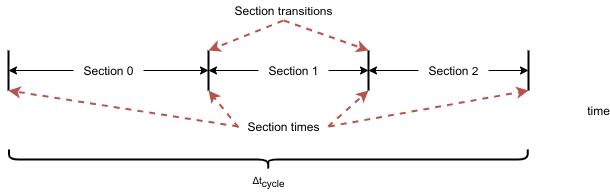

CADET Overview¶
Performing a forward simulation comprises several steps:
For this example, we will use CADET-Python (see Install a frontend) CADET-Python is a file based interface for CADET. CADET still must be downloaded and built from https://github.com/modsim/CADET
CADET-Python almost exactly maps to the documented CADET interface except that all dataset names are lowercase. This simplifies using the interface.
This package includes the Cadet class and H5 class. H5 can be used as a simple generic HDF5 interface.
As an example look at setting column porosity for column 1. From the CADET manual the path for this is /input/model/unit_001/COL_POROSITY
In the python interface this becomes `` sim = Cadet() sim.root.input.model.unit_001.col_porosity = 0.33 `` Once the simulation has been created it must be saved before it can be run `` sim.filename = “/path/to/where/you/want/the/file.hdf5” sim.save() ``
Define unit operation parameters¶
See also: Unit operation models
Define adsorption and reaction paramters¶
See also: Binding models, and Binding models
See also: Reaction models, and Reaction models
Setup connections and switches¶
See also: Simulation, and Networks of unit operations,
See Tables Group /input/model/connections and Group /input/model/connections/switch_XXX.
Configure solver¶
Call solver and read results¶
`` sim.load() ``